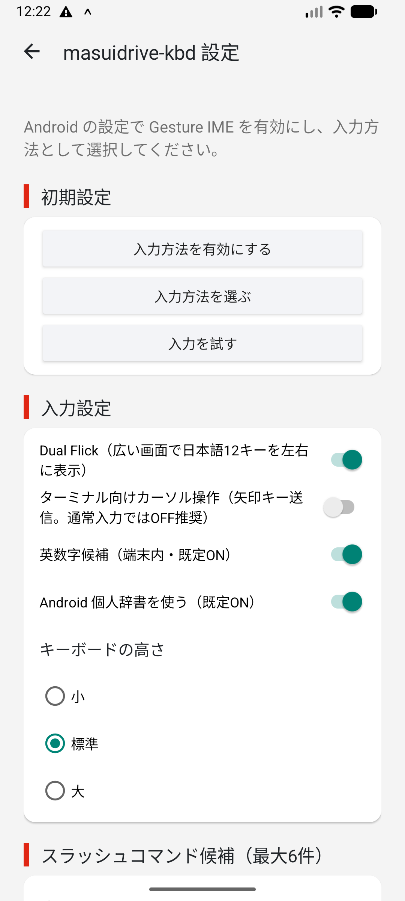
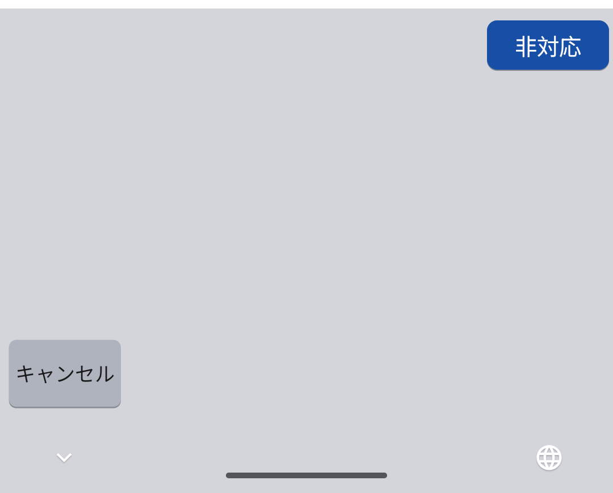
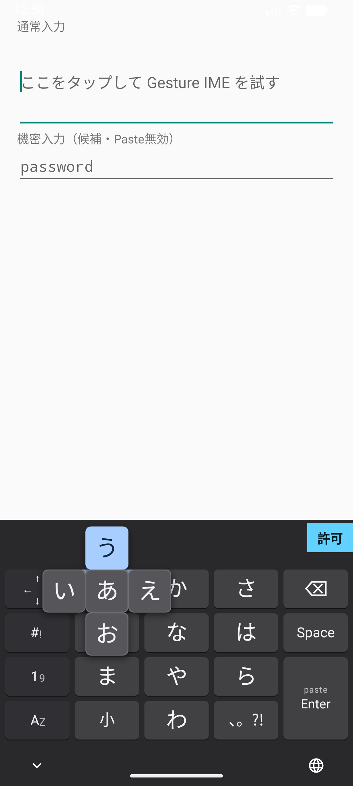
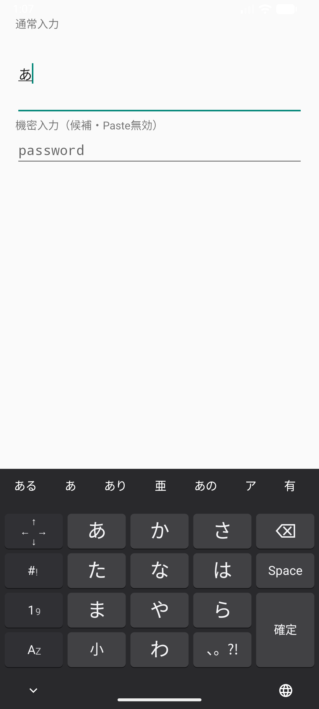
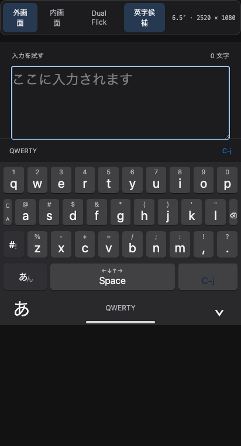
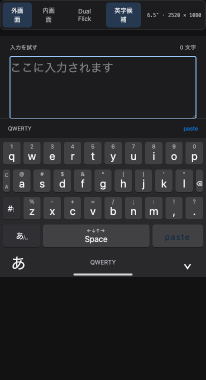
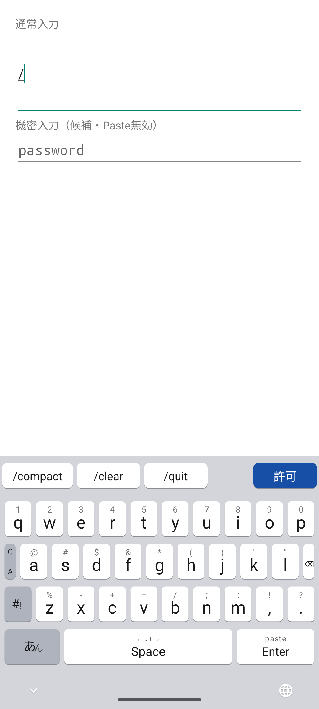
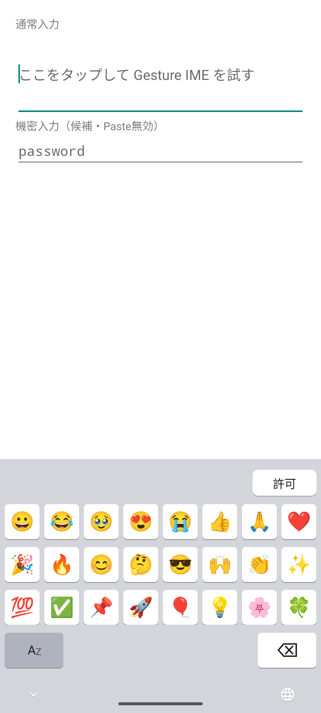
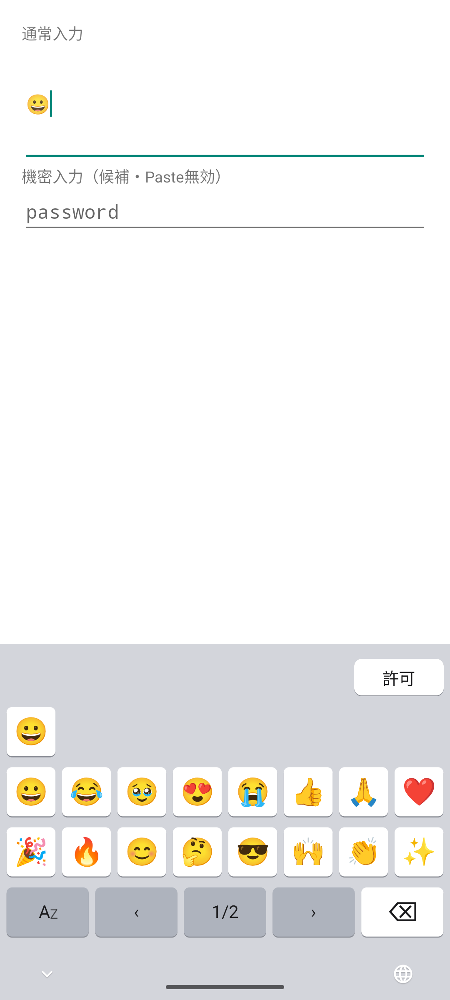
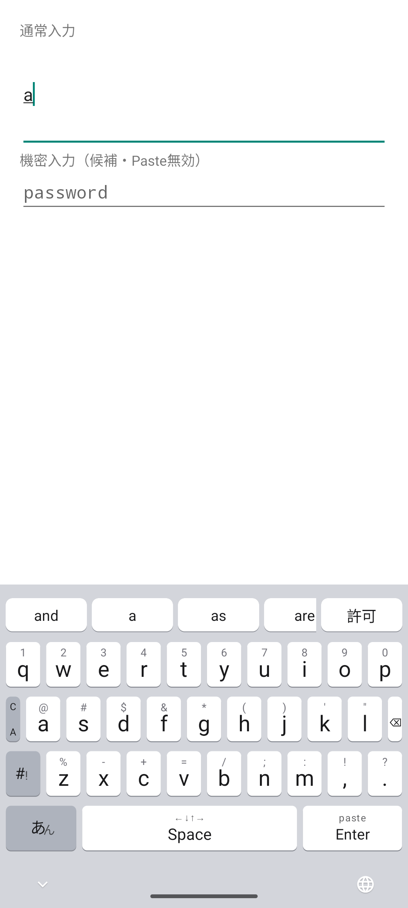

Gesture IME v0.11.0
使い方
Androidへ追加し、フリック操作、かな漢字変換と次単語候補、絵文字レイヤー、端末内音声入力を使う手順です。入力と候補は端末内で処理します。
インストール
- GitHub Releasesからv0.11.0 APKをダウンロードします。
- ダウンロードしたgesture-ime-v0.11.0.apkを開き、Androidの案内に従ってインストールします。初回だけ、使用したブラウザまたはファイル管理アプリに「不明なアプリのインストール」の許可が必要な場合があります。
- インストール後に「Gesture IME」を開きます。
v0.11.0は開発用のdebug署名で配布するARM64端末向けAPKです。Android 9（API 28）以上で動作します。セットアップ画面ではstatus barの下の固定バーから戻れ、設定内容だけをスクロールできます。


IMEを有効にする
- セットアップ画面からAndroidの「キーボードを管理」を開きます。
- 一覧にある「Gesture IME」を有効にします。Androidが表示する注意を確認して続行します。
- 文字入力欄を開き、ナビゲーションバーのキーボード切替から「Gesture IME」を選びます。
Gesture IMEはネットワーク権限を持ちません。通常入力とMozc変換は端末内で処理します。
Light / Dark表示を切り替える
Gesture IME v0.11.0はAndroidの表示テーマへ自動で追従します。Androidの設定でLightまたはDarkへ切り替えると、キーボード、候補欄、フリックポップアップが同じテーマへ変わります。Gesture IME側の設定操作は不要です。


キーボードの高さを選ぶ
- Gesture IMEのセットアップ画面で「キーボードの高さ」を開きます。
- 「小」「標準」「大」から選びます。選択は次回のキーボード表示にも保存されます。
標準はキー4行で228dpです。画面を開いてDual Flickの列が増えても、キー行の高さは変わりません。候補欄と画面下の安全領域はキー4行の外側に保たれます。

音声入力レイヤーで候補を選ぶ
- Android 12以降の対応端末で、候補欄の「許可」を押します。開いたセットアップ画面でAndroidの案内からマイクの使用を許可し、入力欄へ戻ります。
- 左下のレイヤーキーを左へフリックします。方向が確定すると専用の音声入力レイヤーへ切り替わって認識を開始し、準備が整うと2回振動します。
- そのまま話します。認識途中の文字は通常の変換候補と同じ候補欄へ表示されますが、入力欄へはまだ入りません。
- 最終結果が候補欄へ並んだら、入力したい候補をタップします。選んだ候補が1回だけ入力され、元の文字レイヤーへ戻ります。
音声入力レイヤーの左下にある「キャンセル」をタップすると、文字を入力せず元のレイヤーへ戻ります。同じキーは上で日本語、右でQWERTY、下でテンキーへ切り替えられます。中央の長押しによる音声開始は廃止しました。端末内の日本語音声認識サービスと日本語モデルが必要で、通信型認識へは切り替わりません。入力欄の切替、キーボードを閉じる操作、認識エラーでも未確定結果を破棄します。パスワード欄では音声入力を表示しません。録音音声と認識結果は保存しません。

操作モックでは実マイクを使わず、途中結果から複数の最終候補へ変わり、候補タップで確定する流れを試せます。
レイヤーを切り替える
左下のレイヤーキーは、現在の表示にかかわらず同じ方向へ移動します。中央の文字はタップ時の移動先です。記号レイヤーは各レイヤー左端の「#!」をタップして開きます。
| 操作 | 動作 |
|---|---|
| 左フリック | 音声入力レイヤー |
| 上フリック | 日本語 |
| 右フリック | QWERTY |
| 下フリック | テンキー |
| あんをタップ | 日本語 |
| AZをタップ | QWERTY |
| #!をタップ | 記号 |
広い画面でDual Flickを使う
- Dual Flickは初期状態で有効です。設定を変える場合はGesture IMEのセットアップ画面を開きます。
- タブレット表示など横幅の広い画面で日本語レイヤーを開くと、かな12キーが左右に1組ずつ表示されます。Foldなら、閉じたスマホ表示と開いたタブレット表示の両方で使えます。
- 左右どちらからでも同じ読みへ入力できます。狭い画面では設定を保ったまま、自動的に通常の1組表示へ戻ります。
Dual Flickの初期設定はONです。数字、記号、候補欄、Space、Enterなどの編集キーは複製されません。

日本語を入力して変換する
かなキーをタップすると中央、上下左右へ動かすと各方向のかなが入ります。たとえば「あ」は中央が「あ」、左が「い」、上が「う」、右が「え」、下が「お」です。同じキーを続けて押しても文字が置き換わらず、入力した回数だけ追加されます。
- 左下キーを上へフリックして「日本語」を開きます。
- かなを中央または四方向から選びます。入力中の読みと変換候補が上段に表示されます。
- Spaceをタップして候補を巡回します。候補を直接タップするか、「確定」を押すと確定します。読みが変わると候補欄の横位置は先頭へ戻ります。
- 確定後に次単語候補が出たら、入力したい語をタップします。直前の確定文字は置き換わらず、選んだ語が続けて入り、その後の候補に更新されます。
「小」キーはタップで直前のかなを変換可能な形へ順番に切り替え、上で小文字、左で濁点、右で半濁点へ直接切り替えます。変換中の「確定」は、上フリックで元のひらがな、左フリックで全角カタカナをそのまま確定します。次単語候補は次のかな入力、カーソルまたは入力欄の変更で消えます。読みがないときのSpaceは空白、変換中でないときのEnterは入力欄の指定アクションまたは改行になります。


変換学習とAndroid個人辞書を使う
Mozcの変換学習
通常の入力欄で確定した日本語候補は端末内のMozc履歴へ保存され、次回以降の候補順位に反映されます。不要な学習候補は候補を長押しすると、その候補のMozc履歴から削除できます。Android個人辞書由来の候補は長押しで削除されません。
Android個人辞書
- Androidの個人辞書で、単語と読みとして使うショートカットを登録します。
- 「Android 個人辞書を使う」は初期状態で有効です。設定を変える場合はGesture IMEのセットアップ画面を開きます。
- 日本語レイヤーでショートカットと同じ読みを入力すると、登録語がMozc候補の前へ表示されます。
日本語ロケールまたはロケール未指定の登録語を最大6件参照します。Androidが現在のIMEへ個人辞書Providerを提供しない端末や、Providerへのアクセスを拒否した状態では、設定がONでも個人辞書候補を表示せず、通常のMozc候補だけを表示します。個人辞書をGesture IME内へ複製せず、ネットワークへ送信しません。パスワード欄と学習禁止指定の入力欄では、候補、学習、個人辞書参照を行いません。
QWERTYで英字と記号を入力する
| 操作 | 入力 |
|---|---|
| 英字キーをタップ | 小文字 |
| 英字キーを上へスワイプ | その一文字だけ大文字 |
| 英字キーを下へフリック | キー上部の数字またはASCII記号 |
| C/Aを上へフリック | 次の一キーへAltを適用 |
| C/Aを下へフリック | 次の一キーへCtrlを適用 |
| Enterを上へフリック | Ctrl+J |
| Enterを下へフリック | Paste |
| BSをタップ | 一文字削除 |
| BSを下へフリック | ESC操作 |
QWERTYと記号レイヤーを合わせると、Spaceを含む印字可能ASCII 95文字をすべて入力できます。「-」はQWERTYのx下フリックと記号レイヤー、「`」は記号レイヤーにあります。記号レイヤーの文字キーには方向フリックを割り当てていません。C/A選択後は背景色が変わり、次の一キーへ適用すると解除されます。


英字候補を使う
- 英数字候補は初期状態で有効です。設定を変える場合はGesture IMEのセットアップ画面を開きます。
- 半角の英字・数字を続けて入力すると、未確定のまま保持します。英字だけのときは、その文字で始まる単語を候補欄へ最大5件表示します。数字が混ざると候補は表示しません。候補が表示されても入力した文字は変わりません。
- 候補をタップすると、入力中の英字を選んだ単語で置き換えて確定します。
入力中にSpaceを押すと、その英字・数字を変更せず確定してから空白を入力します。Enterを押すと英字・数字だけを確定し、この場合は改行や送信を追加しません。入力中の英字・数字がないときのEnterは従来どおりです。パスワード欄では候補を表示しません。
候補は端末内の固定英単語辞書から生成します。入力履歴の学習、個人辞書、ネットワーク送信、クラウド同期はありません。入力した大文字と小文字は候補にも保たれます。

スラッシュコマンド候補を使う
- QWERTYで「/」を入力します。初期設定では「/compact」「/clear」「/quit」が候補欄に表示されます。
- 候補をタップすると、入力中の「/」を選んだコマンドで置き換えて確定します。候補を選ばなければ「/」のまま入力できます。
- 候補を変える場合は、Gesture IMEのセットアップ画面にある6個の欄を編集します。先頭の「/」は省略しても自動で補われ、空欄と同じ候補の重複は表示されません。
スラッシュ候補は英数字候補のON/OFFにかかわらず使えます。パスワード欄などの機密入力では表示しません。


絵文字、カーソル、削除、Paste
絵文字レイヤー
日本語・テンキー左上の☺で絵文字を開きます。上3行は最近使った絵文字を新しい順に最大8件、その後に同梱一覧を続けて表示する縦スクロールです。recentが空なら一覧の先頭24件を表示します。最下行はレイヤー切替と削除を固定し、recentはこの端末だけに保存します。

Spaceトラックパッド
Spaceを押したまま指を動かすと、カーソルを移動できます。最初に大きく動かした方向に応じて縦または横へ進み、指を離すまで軸が固定されます。横は文字単位、縦は改行で区切られた行単位（画面上の折り返しを除く）で移動します。
ターミナル向けカーソル操作
一部のターミナルアプリでカーソル移動が反応しない場合は、セットアップ画面の「ターミナル向けカーソル操作」を有効にします。矢印キーとして送信する互換設定です。初期設定はOFFで、通常の入力欄ではOFFのまま使います。
Enterの上下フリック
Enterを上へフリックするとCtrl+Jをキーイベントとして送ります。待機中は補助ラベルを出さず、上フリック中だけ「C-j」を中央へ表示します。下へフリックすると、クリップボード先頭のテキストを貼り付けます。パスワード欄ではPasteと候補学習を無効にします。
v0.11.0で変わったこと
- 日本語確定後、Mozcの次単語候補を候補欄へ表示します。候補を選ぶと直前の確定文字を置き換えず、続けて入力します。
- キーボードの高さを小・標準・大から選べます。アプリ切替、画面幅、Dual Flickでも候補欄とキー4行の高さを維持します。
- 候補faceと最上段キーの間隔、先頭候補の左外周をキーの間隔へ揃えました。
- 設定画面はsafe areaの下に固定バーを置き、設定内容だけをスクロールします。
- 日本語・テンキー左上から絵文字レイヤーを開けます。recentは端末内に保存され、中央の頁表示キーでも前後の頁へ移動できます。


以前の版はGitHub Releasesから利用できます。
v0.11.0の制約
- 次単語候補は通常の入力欄だけで利用できます。パスワード欄と学習禁止指定の入力欄では、周辺文字列を取得せず候補も表示しません。
- Android個人辞書はショートカットを読みとして登録した日本語またはロケール未指定の語だけを候補へ加えます。辞書の追加・編集・削除はAndroid設定で行います。
- 他サービスの会話ログ取り込み、端末間同期、クラウドバックアップはありません。
- 音声入力はAndroid 12以降が対象です。端末内認識サービスまたは日本語モデルが導入されていない端末では利用できません。
- エミュレーターで日本語モデルがない場合の「非対応」表示を確認しています。実際の日本語発話と途中結果は実機確認待ちです。
- スマホ幅相当412dp、タブレット幅相当840dpをエミュレーターで確認しています。Fold実機での最終検証は未実施です。
- 配布APKはARM64向けです。
- 操作モックはジェスチャーと画面遷移の参考用です。音声入力はマイクを使わず、途中結果と確定だけを再現します。候補生成には小さな説明用辞書を使い、Mozc学習とAndroid個人辞書は再現しません。